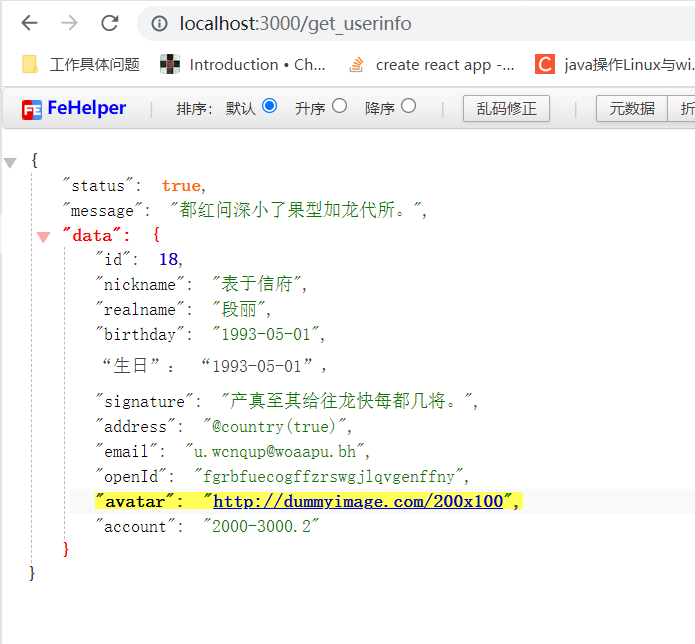
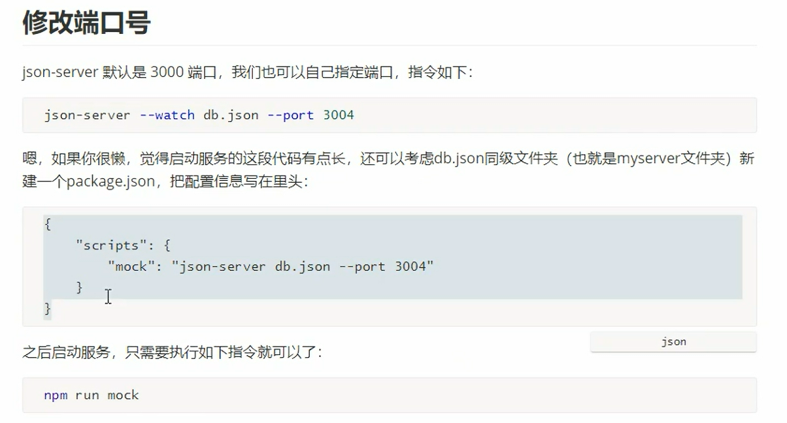
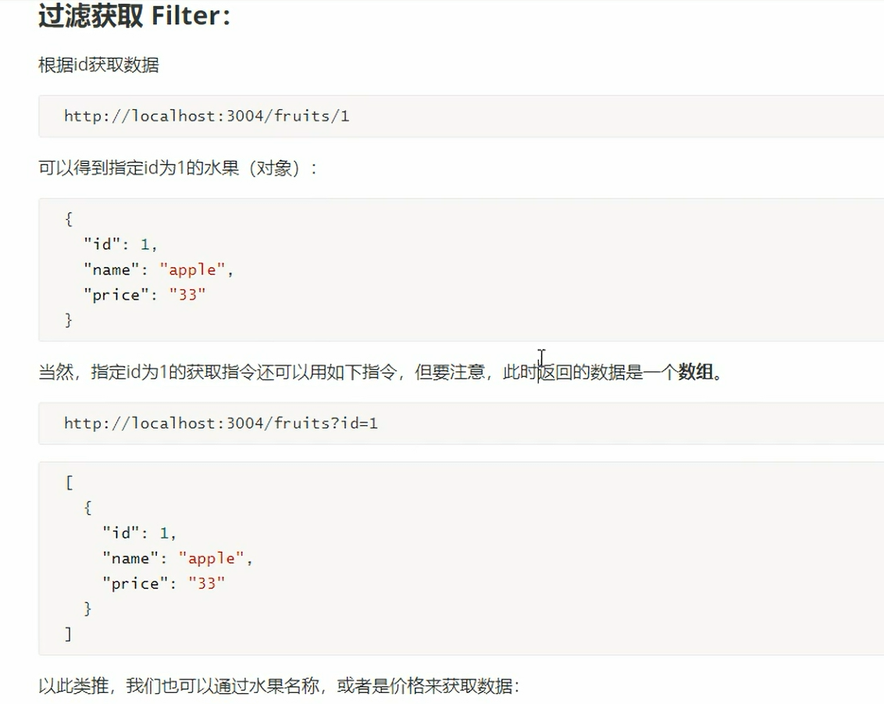
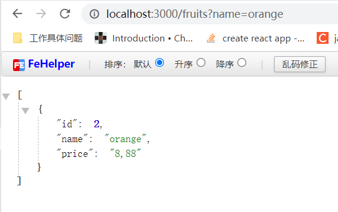
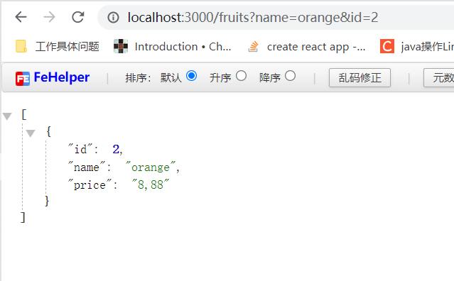
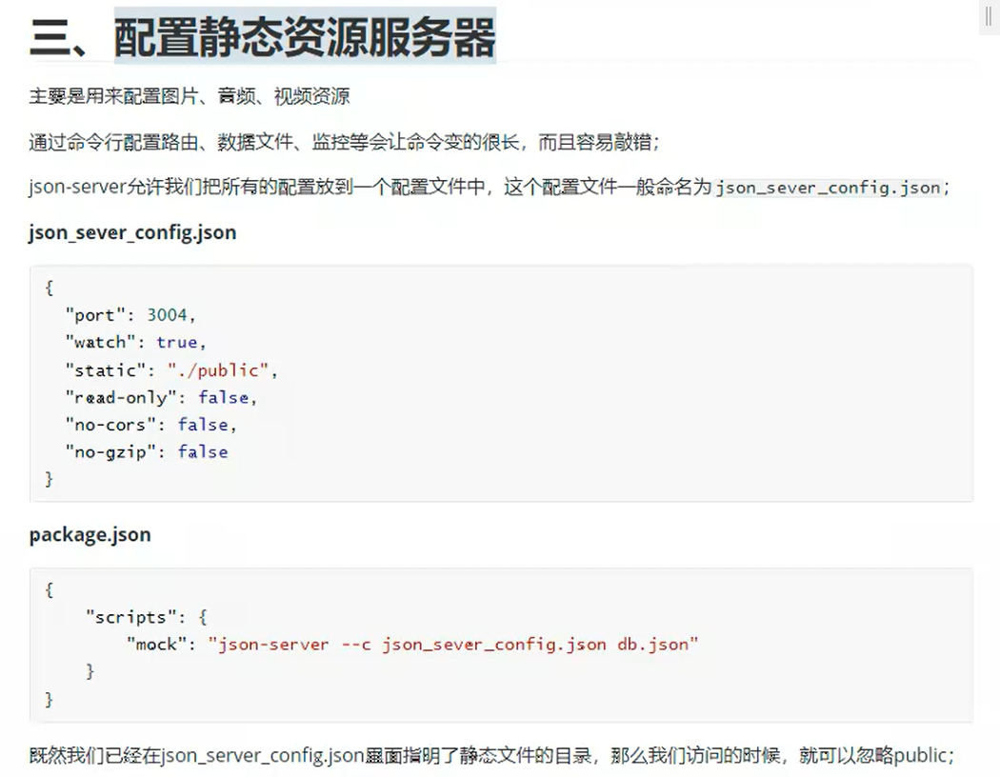
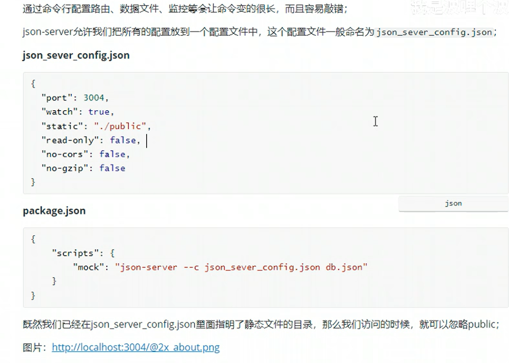

基础篇
1. Mock.js: 如何与后端潇洒分手
现在的开发基本上都是前后端分离,除了在性能要求较高的场景中才可能选择 SSR 服务端渲染,前端在前后端分离的情况下,专注渲染逻辑和样式和性能等,开发依赖数据驱动,如果后端还没写好数据,则需要用类似 Mockjs 的技术来提供模拟数据
1.1 为什么你总是下不了班
在后端把接口开发完成之前,一般会要求前端用虚拟数据填充写好的静态页面,来调整样式,通常获取虚拟数据有几种方式:
- 将数据写在所使用的代码段附近,等后端开发好之后再修改.但是这样依赖,把引用代码里的数据(同步)改为异步获取后端请求可能会导致 1.重构代码量大;2.没有改为异步请求,导致后面的代码在获取数据之前执行
- 将数据写入 json 文件,从本地引用或请求.这种方式侵入性更小,但是依然是同步方式,还是需要修改大量代码为异步方式,如果联调的时候后端接口出问题,前端白屏,又要改回本地代码看效果调试,等待后端修复完成
- 等待后端开发完成.可能会导致前端跟后端一起调试,一直刷新页面,甚至可能后端数据结构改变,导致写好的页面也要一起大改
1.2 联调加速
高效的联调需要前后端开发人员有效的约定,提前对需要的接口进行沟通和设计.发送哪些参数,参数的具体结构一般由后端开发人员决定,而后端返回的响应数据由前端人员决定.很多后端喜欢返回一个需求数据的超集,导致前端需要混入很多额外的筛选和重组数据的代码.
接口协定,也不是一定不能偏离,但是要及时沟通,而不是最后才告诉对方自己哪个地方和最初设计不一致.有了明确的接口协定,就可以根据协定来自己设计和提供虚拟数据进行开发,而联调的时候改一下请求地址就可以正常使用后端的数据了
1.3 使用 Mock.js
Mockjs 是 js 语言生成测试数据的第三方库,用一套相对规范的模板语法让开发者自行定制测试数据的结构,然后根据模板生成用于测试的数据
1.3.1 Mock.js 的语法规范
分为数据模板定义规范和数据占位符定义规范
1.3.1.1 数据模板定义规范
数据模板的每个属性由 3 部分组成: 属性名,生成规则,属性值;格式为”<name>|<rule>“: <value>
它会根据 value 的类型将 rule 解释为不同的编译规则
1.3.1.2 数据占位符定义规范
写在属性值字符串中,生成数据时,根据定义替换为对应的内容.格式为’name|rule’: ‘@占位符’或’name|rule’: ‘@占位符(参数[,参数])’
1.3.2 Mock.js 实战
mockjs 支持浏览器环境和 node 环境使用.可以用工具根据后端接口文档来生成 mock 数据模板,简化开发效率
npm i mockjs
1.3.2.1 实例 1: 请求/get_userinfo 接口时返回模拟的用户信息
const express = require("express");
const Mock = require("mockjs");
//实例化express
let app = express();
// post请求体相关
let bodyParser = require("body-parser");
app.use(bodyParser.json());
// 允许跨域
app.all("*", function (req, res, next) {
res.header("Access-Control-Allow-Origin", "*");
res.header("Access-Control-Allow-Methods", "PUT, GET, POST, DELETE, OPTIONS");
// 此处根据前端请求携带的请求头进行配置
res.header("Access-Control-Allow-Headers", "X-Requested-With, Content-Type");
// 例如： 我们公司的请求头需要携带Authorization和Client-Type，此处就应该按照以下进行配置
// res.header("Access-Control-Allow-Headers", "X-Requested-With, Content-Type, Authorization, Client-Type");
next();
});
app.get("/get_userinfo", function (req, res) {
var data = Mock.mock({
"status|1": true, // 标识请求是否成功,返回true的概率是1/2
message: "@csentence", // 请求失败时返回错误信息,使用占位符返回中文句子
data: {
"id|1-20": 0, // id为1~20之间的整数,0表示返回值为数字类型
nickname: "@ctitle", // 昵称使用中文标题占位符
realname: "@cname", // 实名使用中文名称占位符
birthday: "@date", // 生日使用日期占位符
signature: "@csentence", // 签名使用中文语句占位符
address: "@country(true)", // 城市占位符转译格式为'xx省 xx市'
email: "@email", // 邮箱使用邮箱占位符
openId: "@word(28)", // 生成28位字符串模拟ID
// 报错: require不是一个方法(mockjs引入canvas(node-canvas),而官方没有一起打包) 'avatar': '@dataImage(200x100)', // 生成尺寸为200x100的头像图片链接
avatar: Mock.Random.image("200x100"), // 生成尺寸为200x100的头像图片链接
account: "2000-3000.2", // 账户余额整数部分为2000-3000,小数点后保留两位
},
});
res.json(data);
});
app.listen("3000", () => {
console.log("监听端口 3000");
});

我个人喜欢 json-server
1.3.x json-server
1.3.x.1 环境准备
db.json
{
"posts": [
{
"id": 1,
"title": "json-server",
"author": "typicode"
}
],
"comments": [
{
"id": 1,
"body": "some comments",
"postId": 1
}
],
"profile": {
"name": "typicode"
},
"stus": [
{
"id": 10001,
"name": "张三"
},
{
"id": 10002,
"name": "李四"
},
{
"id": 10003,
"name": "王五"
}
],
"articleArray": [
{
"id": 100001,
"title": "111",
"desc": "111xxx111"
},
{
"id": 100002,
"title": "222",
"desc": "222xxx222"
},
{
"id": 100003,
"title": "333",
"desc": "333xxx333"
}
]
}
启动
json-server --watch db.json
# 自定义端口号
json-server --watch db.json --port 3333

1.3.x.2 查询数据
{
"fruits": [
{
"id": 1,
"name": "apple",
"price": "33"
},
{
"id": 2,
"name": "orange",
"price": "8,88"
}
],
"users": [
{
"name": {
"username": "admin",
"nickname": "dachui"
},
"pwd": "123456"
}
]
}
直接获取,使用 get 请求获取
过滤获取 filter
/1获取的是id为1的对象
http://localhost:3000/fruits/1
?id=1获取的是id为1的数组
http://localhost:3000/fruits?id=1


多个条件,用&连接

1.3.x.3 添加数据
1.3.x.4 修改数据
1.3.x.5 删除数据
1.3.x.6 静态资源


{
"scripts": {
"mock": "json-server --c json_server_config.json db.json"
}
}
json_server_config.json
{
"port": 4000,
"watch": true,
"static": "./public",
"read-only": false,
"no-cors": false,
"no-gzip": false
}